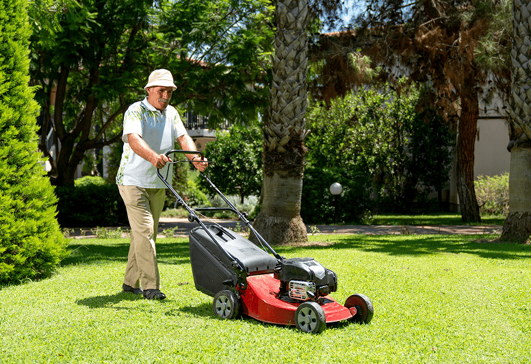

Erfahrenes Gartenteam
Planung und Ausführung mit eigenen Fachleuten.
Gartenplanung, fachgerechter Bau und zuverlässige Pflege für private und gewerbliche Grünräume in Zürich.
Planung und Ausführung mit eigenen Fachleuten.
Robuste Pflanzen, gesunde Böden und sinnvoller Wassereinsatz.
Kurze Wege und verlässliche Termine in Zürich und Umgebung.
Über Grünraum
Ein Garten soll nicht nur am Tag der Übergabe überzeugen. Wir planen Flächen so, dass sie wachsen dürfen, einfach zu pflegen sind und auch nach Jahren stimmig wirken.


Unsere Leistungen


Saubere Linien, gute Entwässerung und Materialien, die altern dürfen.
Projekt starten →Wir arbeiten aufmerksam, halten Abmachungen ein und hinterlassen jeden Einsatz ordentlich – vom ersten Spatenstich bis zur letzten Schnittkante.

Natürlich schön
Wir setzen auf gesunde Böden, langlebige Materialien und Pflanzen, die am Standort wirklich funktionieren.
So arbeiten wir

Wir prüfen Nutzung, Licht, Boden, Wasser und bestehende Strukturen.

Sie erhalten einen nachvollziehbaren Entwurf mit klarer Kostenschätzung.

Wir stimmen Material, Zufahrt und Etappen sauber mit Ihnen ab.

Mit Pflegehinweisen, Pflanzliste und einer gemeinsamen Schlussrunde.

12'000 gepflegte Stunden
„Grünraum hat unseren unruhigen Hanggarten in einen Ort verwandelt, den wir jeden Tag nutzen. Die Planung war klar und das Team unglaublich angenehm.“
Martina & Lukas M. · Küsnacht
Galerie



Häufige Fragen
Das hängt von Bepflanzung und Anspruch ab. Viele Gärten bleiben mit vier bis sechs gut geplanten Einsätzen pro Jahr stabil.
Ja. Vorgärten, Terrassen, einzelne Beete oder eine neue Hecke gehören genauso zu unserem Alltag wie komplette Neuanlagen.
Für viele Gehölze und Stauden sind Frühling und Herbst ideal. Topfgewachsene Pflanzen lassen sich mit guter Bewässerung oft länger setzen.
Ja. Wir bieten saisonale Pakete mit fixen Zeitfenstern und dokumentierten Arbeiten an.
Mit den richtigen Arbeiten zur richtigen Zeit bleibt die Entwicklung kontrolliert und der Pflegeaufwand überschaubar.
Boden vorbereiten, Stauden teilen, Rasen stärken und neue Pflanzungen setzen.
Bewässerung prüfen, Formen schneiden und Blütenflächen gezielt pflegen.
Gehölze setzen, Laub nutzen und empfindliche Bereiche winterfest machen.
Strukturen beurteilen, Gehölzschnitt planen und die nächste Saison vorbereiten.
Gartenwissen


Kontakt
Beschreiben Sie kurz Ihren Aussenraum und was sich verändern darf. Wir melden uns für eine unverbindliche Besichtigung.